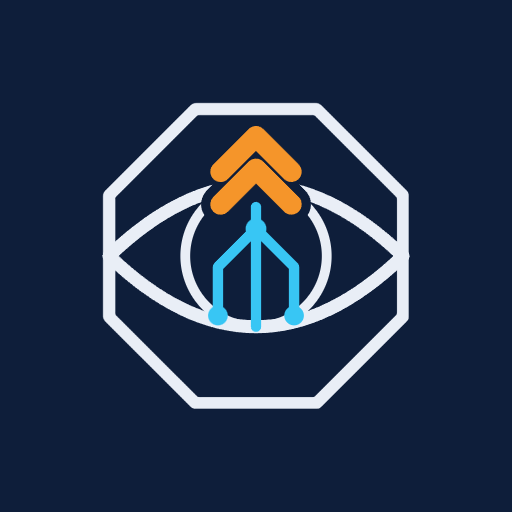
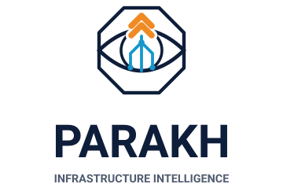

PARAKH
Infrastructure Intelligence
The animated mark in three layers: the lens scans, the network carries a pulse from the pads up to the beacon, and the beacon lifts and rings out. Its colour and pace follow the state. Click a logo, or pick a state.
A · LensOctagon frame, eye and iris. One short light runs round the frame every
nine seconds; with the intro, the lens draws itself first.
B · NetworkThree traces leave pads on the iris rim and meet at a hub. A pulse
travels each one; the pads flash as it leaves and the hub as the pulses meet.
C · BeaconThe chevrons lift in turn, glow and send out a ring. Stable: green,
every 4.8 s. Watch: amber, 3.2 s. Critical: red, 1.6 s, a double ring and red pulses.
Sizes
Favicon
At tab size the full mark blurs, so the favicon keeps the octagon, the eye, a pupil and one chevron. In the dashboard its chevron turns red while an unseen severe alert is waiting.
PARAKH · Early warning
PARAKH · new alert
PARAKH · Early warning
PARAKH · new alert

Lockups


Use it
Any page, no framework:
<script src="parakh-logo.js"></script>
<parakh-logo size="96" status="watch" tone="light"></parakh-logo>
// from your data: stable | watch | critical
document.querySelector('parakh-logo').status = 'critical'
In the dashboard (React), the same mark with the beacon driven by the alerts:
import { ParakhMark } from '@/components/brand/ParakhMark'
<ParakhMark size={30} status={beacon.status} /> // top bar, lib/useBeaconStatus.ts
<ParakhMark size={52} tone="dark" intro /> // sign-in panel
Anywhere an image goes (slides, documents, a README): the animated SVG plays inside a plain image tag.
<img src="brand/svg/parakh-mark-animated.svg" width="128" alt="PARAKH">
Files
parakh-logo.js | The web component <parakh-logo> (attributes status, tone, size, animated, intro, label). |
svg/parakh-mark(-dark).svg | Still mark for light (or dark) backgrounds; plain attributes, safe for slides. |
svg/parakh-mark-animated(-dark).svg | Self-contained animated mark. |
svg/parakh-lockup-*.svg | Mark with the wordmark, horizontal and stacked, light and dark. |
svg/parakh-favicon(-alert).svg, svg/parakh-app-icon.svg | Tab icon (and its alert form) and home-screen icon. |
png/*.png | Transparent PNG exports of the marks and lockups for slides, and the 512 px app icon. |
build_brand.py | Regenerates all of it, plus the dashboard's favicons (python brand/build_brand.py). |